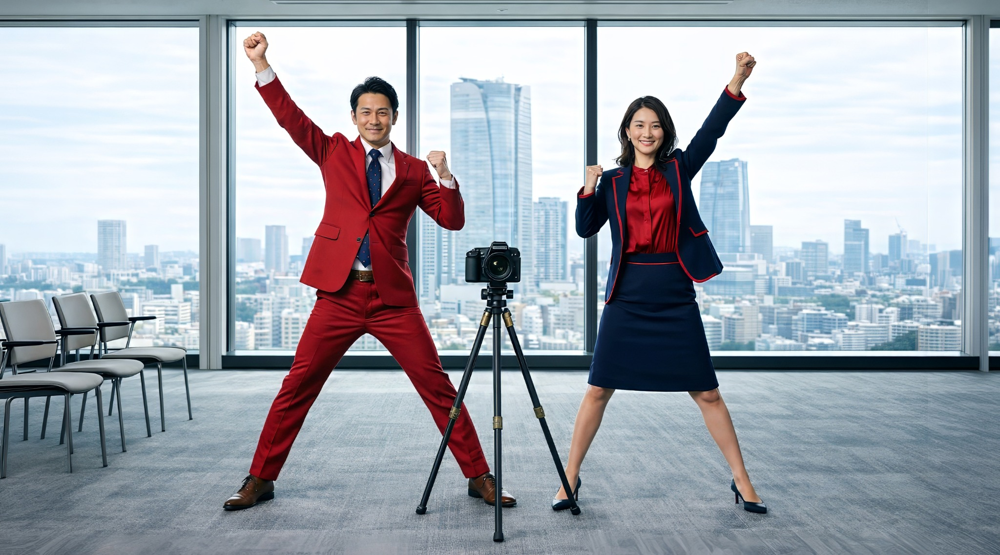
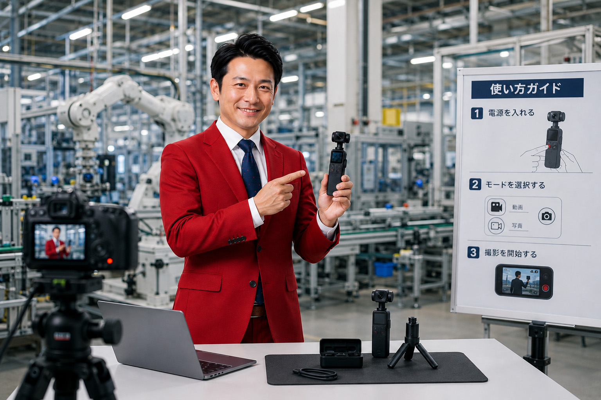

THEME 01
採用動画
社員インタビュー、仕事紹介、職場紹介など。
活用先
採用サイト／求人広告／会社説明会／スカウト返信／面談前共有
動画を活用したい。でも、毎回外注するのは費用も時間もかかる。
社内で作ろうとしても、撮影・編集・構成・デザインでつまずく。
このプログラムでは、1つの動画テーマに絞り、2ヵ月で社内に制作の型を残します。

START IN-HOUSE外注も内製も、それぞれの難しさがあります。多くの企業が「動画を続けられない壁」につまずいています。
1本ごとに数十万円。動画を継続的に作りたいと思うほど、コストの重さが効いてきます。
撮影、音声、編集、構成、テロップ、BGM、書き出し。何から手をつければよいのか分からなくなります。
最初の1本は気合いで作れても、再現性のある型がなければ、2本目以降が続きません。
テレビCM、複雑なアニメーション、大規模なブランドムービーまで社内で作ることを目指すわけではありません。
まずは1つの動画テーマに絞り、その型を作ることが目的です。
あらゆるジャンルの動画を自由自在に作れる「映像制作部」を作る
テレビCMや大規模ブランドムービーを社内で内製化する
プロのクリエイターと同じレベルの作品を、すべて自社で再現する
選んだ1つの動画テーマを、社内で継続的に作れる状態にする
自社用のテンプレート・仕様書・チェックリストを社内に残す
「何でも作れる状態」ではなく、
「選んだ動画テーマを
社内で作り続けやすい状態」
を目指します。
まず1つの動画テーマを選びます。採用動画なら採用動画。導入事例動画なら導入事例動画。教育研修動画なら教育研修動画。1つに絞ることで、必要なスキルと型が明確になります。
どのテーマを選ぶかによって、必要な型は変わります。まずは社内で続けたい1本を決めるところから。
社員インタビュー、仕事紹介、職場紹介など。
顧客インタビュー、導入前後の変化、サービス活用シーンなど。
代表メッセージ、業界解説、ノウハウ発信、サービス紹介など。
社内研修、営業研修、接客研修、顧客教育など。

製品の使い方、サービス利用方法、操作説明、よくある質問への回答など。
動画制作には、撮影・音声・編集・構成・テロップ・BGM・書き出しなど、さまざまなスキルがあります。
すべてを覚えるのは大変。だからこそ、このプログラムでは「1つの型」に絞ります。
採用動画なら採用動画。テーマを1つに絞ることで、覚えるべきカット、構成、編集の幅が明確になります。
「何でも学ぶ」のではなく、「自社で継続的に使う1つの型に必要なこと」だけを学ぶから、定着しやすい。
1本目は講師と共同で型を作り、2本目は社内主導で再現する。実践を通じて、社内のスキルが定着します。
2ヵ月のなかで、動画イメージの具体化から2本目の社内主導制作まで、5つのステップで進めます。
完成イメージを、実現可能性も踏まえて整理します。目的、ターゲット、構成、トーン、必要カットを言語化し、判断基準を揃えます。
インタビュー撮影、実演撮影、Bロール撮影、音声、Premiere ProまたはDaVinci Resolveの基本編集を、選んだテーマに必要な範囲で学びます。
講師主導で、社内担当者と一緒に制作します。ここで、その会社にとっての動画制作の基準＝「型」を作ります。
1本目で作った型をもとに、社内担当者が主導して制作します。講師はレビュー・補助を行い、社内で再現できるかを確認します。
研修終了後、希望される場合は3ヵ月のオンライン相談を受け付けます。この間に制作した動画のレビューも行います。
単に動画を2本作るのではありません。「型を作る」→「再現する」の2段階に意味があります。
講師がリードしながら、撮影・編集・構成の判断を社内担当者と一緒に行い、その会社にとっての「動画制作の基準」を1本のなかに落とし込みます。
社内担当者が主導して制作し、1本目で作った型を再現できるかを実践のなかで確認します。講師はレビューとフォローに回ります。
完成動画だけでなく、社内で継続的に動画を作るための素材・仕様・運用ルールが残ります。
1本目（共同制作）と2本目（社内主導）。完成データを納品。
Premiere Pro / DaVinci Resolveで再利用できる編集プロジェクトテンプレート。
自社のトーンに合わせたフォント・配色・サイズのルールと素材データ。
話者の名前・肩書きを表示する下部テロップのテンプレート。
冒頭または末尾に挿入する自社ロゴのアニメーション素材。
動画の入りと終わりに使える共通素材。シリーズ化に活用できます。
どのジャンル・テンポ・調達先のBGMを選ぶか、自社用の選定ルール。
解像度、フレームレート、書き出し設定、フォルダ運用ルールなどを明文化。
必要カット、音声、編集の確認項目をリスト化。社内引き継ぎが容易に。
一般的な動画スクールでは、動画制作のスキルを網羅的に学びます。
このプログラムでは、実践的なスキルに絞ったうえで、自社用のノウハウと型を社内に残すことに価値を置きます。
動画2本だけの価格ではありません。
社内に残る「型」と「ノウハウ」を含めた価格です。
※期間目安：2ヵ月／対象：1社・社内担当者2名／オプションで研修後3ヵ月のオンライン相談あり
どちらが優れているという話ではありません。「1本ずつ高品質に作る」のか、「社内で続けられる型を作る」のか、目的が異なります。
月1本ペースで動画を継続的に作りたい企業に向いています。年に1〜2本だけ動画が必要な場合は、通常の動画外注の方が向いていることもあります。
複数ジャンルに広げたい場合は、別途「動画リーダー育成プログラム」もあります。本プログラムで型を作ったあと、より広範な動画運用を社内でリードできる人材を育てたい企業向けです。詳細は個別にご案内します。
検討段階でよくいただく質問をまとめました。記載のない内容も、お気軽にお問い合わせください。
いいえ。まずは1つの動画テーマに絞り、その型を社内に残すことを目指します。あらゆる動画を自由自在に作れるようになるプログラムではありません。
採用動画、導入事例動画、企業YouTube動画、教育研修動画、HowTo動画などを想定しています。最初の打ち合わせで、御社の課題と合うテーマを一緒に決めます。
基本はPremiere Proを想定していますが、DaVinci Resolveでの対応も可能です。社内環境に合わせて選択いただけます。
はい。スマホ、三脚、外部マイクなど、現実的な機材から始められます。ただし、動画テーマや求める品質によって必要な機材は変わりますので、事前にすり合わせます。
研修部分については、制度や企業条件によって活用を検討できる場合があります。ただし、対象可否は制度・企業条件・実施内容によって異なるため、必要に応じて社労士など専門家への確認をおすすめします。
採用動画、導入事例動画、企業YouTube動画、教育研修動画、HowTo動画。
どの動画を社内で作れるようにしたいのかによって、必要な型は変わります。
まずは現在の課題と、内製化したい動画テーマについてお聞かせください。